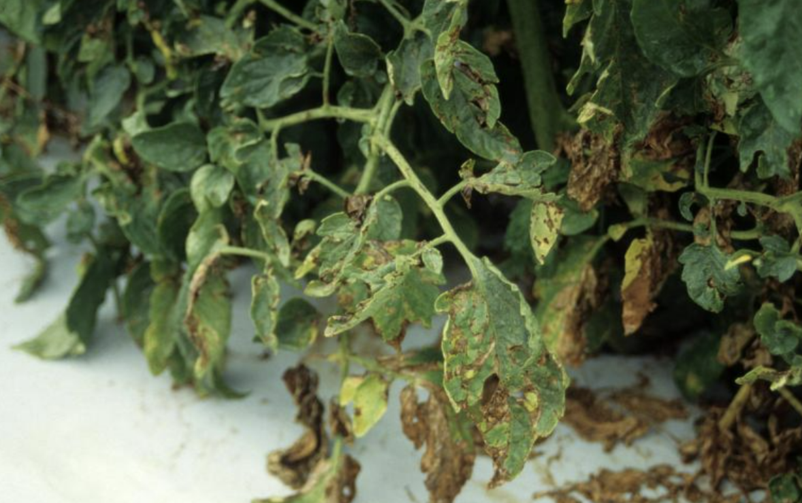
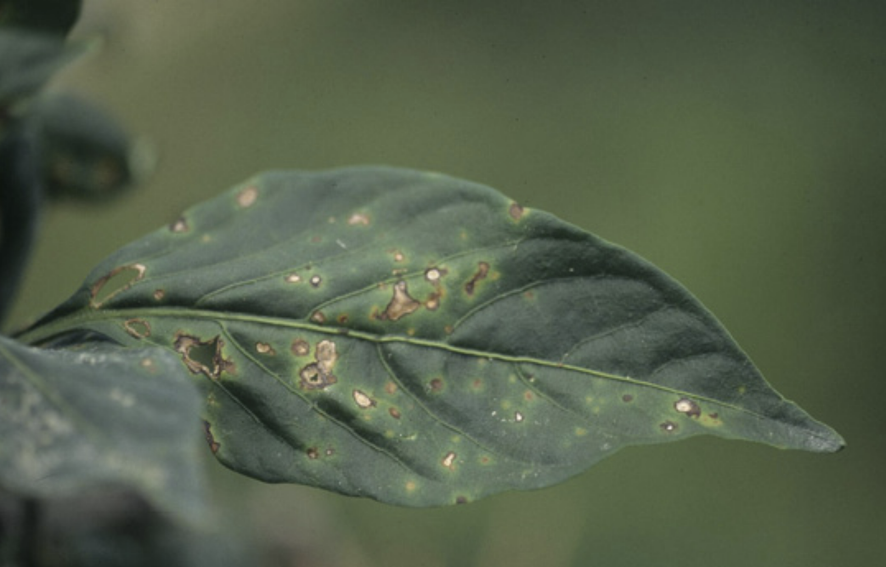

Bacterial Speck in Tomato
Quick facts
- Bacterial speck disease manifests as small, dark, water-soaked spots on leaves, stems, and fruit, typically surrounded by a yellow halo.
- The disease often emerges in cool, wet conditions and can severely affect the quality and marketability of the fruit.
- Infected plants may exhibit stunted growth, and the bacteria can survive in plant debris, seeds, and on equipment, spreading easily under favorable conditions.
Pesticides
- Copper-Based Products
- Streptomycin
- Oxytetracycline
- Cinna-bacterin
- Sanitation
How to tell late blight apart from other issues
- Leaves have large, dark brown blotches with a green gray edge; not confined by major leaf veins.
- Infections progress through leaflets and petioles, resulting in large sections of dry brown foliage.
- Stem infections are firm and dark brown with a rounded edge.
- In cool, wet weather, entire fields turn brown and wilted as if hit by frost.
- In tomatoes, firm, dark brown, circular spots grow to cover large parts of fruits. Spots may become mushy as secondary bacteria invade.
- In high humidity, thin powdery white fungal growth appears on infected leaves, tomato fruit and stems.
- Infected potato tubers become discolored (anywhere from brown to red to purple), and infected by secondary soft rot bacteria.

Biology
- Late blight (Phytophthora infestans) is a water mold.
- Late blight favors cool (60°F to 70°F), damp conditions. Prolonged hot dry days can halt pathogen spread.
- Late blight doesn’t appear in Minnesota every year.
- The most common routes of introduction each season are infected potato seed tubers, infected tomato transplants shipped in from other regions, or windblown sporangia (asexual spores) from the south that then infect fields and circulate locally.
- P. infestans can overwinter in Minnesota if protected in potato cull piles. Overwintering in a tomato production system is unlikely but infected tomato fruits may give rise to infected volunteer seedlings the following season.
- Under cool, wet conditions, P. infestans can infect and produce thousands of sporangia per lesion in less than five days. These sporangia easily become air-borne, resulting in prolific spread of the pathogen.
- There are many different strains of P. infestans. These are called clonal lineages and designated by a number code (i.e. US-23). Many clonal lineages affect both tomato and potato, but some lineages are specific to one host or the other.
- The host range is typically limited to potato and tomato, but hairy nightshade (Solanum physalifolium) is a closely related weed that can readily become infected and may contribute to disease spread. Under ideal conditions, such as a greenhouse, petunia also may become infected.

Managing The early blight
Resistant varieties
- Even a resistant variety will show some late blight symptoms when conditions are highly favorable for disease.
- Levels of resistance vary between cultivars and may be more or less effective depending on the P. infestans clonal lineage present.
- Plant tomatoes where no tomatoes, potatoes, peppers or eggplants have been for the past 3-4 years.
- Keep leaves as dry as possible.
- *Water with drip irrigation or a soaker hose.
- *Water in the morning so leaves dry quickly in the sun.
- *Stake or cage plants.
- *Space plants so that air flows between them.
- Remove or bury plants at the end of the season. Manage cull piles so culls break down over winter.
- Growers should watch for late blight symptoms in their regular scouting, particularly with weather conditions that favor disease. Detecting late blight early is important. Scout early in the day before dew dries, and pay extra attention to portions of the field that may dry out more slowly (areas shaded by trees, areas with poor air circulation, etc.)
- Late blight can be a very damaging disease, so it causes alarm.
- Scout tomatoes regularly and remove diseased leaves
- Keep leaves dry to reduce the spreading of disease.
Cultural controls
Monitoring for The Late blight